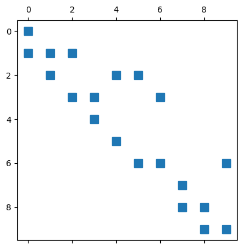
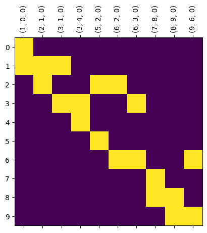

Sandbox for testing purposes
[1]:
import networkx as nx
import numpy as np
import matplotlib.pyplot as plt
import pandas as pd
from cereeberus import EmbeddedGraph, ReebGraph
import cereeberus.data.ex_mappergraphs as ex_mg
# from cereeberus.data.ex_mergetrees import randomMergeTree
[2]:
M = ex_mg.dancing_man()
[3]:
M.draw()

[4]:
B = nx.linalg.graphmatrix.incidence_matrix(M, oriented = True)
print(f"Edge count: {len(M.edges())}")
print(f"Matrix shape: {B.shape}")
plt.spy(B)
Edge count: 10
Matrix shape: (10, 10)
[4]:
<matplotlib.lines.Line2D at 0x1667bb5e0>

[5]:
M.plot_adjacency_matrix()

[6]:
M.plot_boundary_matrix()

[61]:
def boundary_matrix(G, as_type = 'array'):
"""
Creates an boundary matrix for a given graph and node subset.
Args:
G (networkx.Graph): The graph.
node_subset (list): A list of nodes representing the subset.
Returns:
numpy.ndarray: The boundary matrix.
"""
V = list(G.nodes())
E = list(G.edges())
B = np.zeros((len(V), len(E)))
for j, e in enumerate(E):
i = V.index(e[0])
B[i, j] = 1
i = V.index(e[1])
B[i, j] = -1
if as_type == 'array':
return B
else:
B_df = pd.DataFrame(B, index = V, columns = E)
return B_df
boundary_matrix(M, as_type='df')
[61]:
| (1, 0) | (2, 1) | (3, 1) | (3, 4) | (5, 2) | (6, 2) | (6, 3) | (7, 8) | (8, 9) | (9, 6) | |
|---|---|---|---|---|---|---|---|---|---|---|
| 0 | -1.0 | 0.0 | 0.0 | 0.0 | 0.0 | 0.0 | 0.0 | 0.0 | 0.0 | 0.0 |
| 1 | 1.0 | -1.0 | -1.0 | 0.0 | 0.0 | 0.0 | 0.0 | 0.0 | 0.0 | 0.0 |
| 2 | 0.0 | 1.0 | 0.0 | 0.0 | -1.0 | -1.0 | 0.0 | 0.0 | 0.0 | 0.0 |
| 3 | 0.0 | 0.0 | 1.0 | 1.0 | 0.0 | 0.0 | -1.0 | 0.0 | 0.0 | 0.0 |
| 4 | 0.0 | 0.0 | 0.0 | -1.0 | 0.0 | 0.0 | 0.0 | 0.0 | 0.0 | 0.0 |
| 5 | 0.0 | 0.0 | 0.0 | 0.0 | 1.0 | 0.0 | 0.0 | 0.0 | 0.0 | 0.0 |
| 6 | 0.0 | 0.0 | 0.0 | 0.0 | 0.0 | 1.0 | 1.0 | 0.0 | 0.0 | -1.0 |
| 7 | 0.0 | 0.0 | 0.0 | 0.0 | 0.0 | 0.0 | 0.0 | 1.0 | 0.0 | 0.0 |
| 8 | 0.0 | 0.0 | 0.0 | 0.0 | 0.0 | 0.0 | 0.0 | -1.0 | 1.0 | 0.0 |
| 9 | 0.0 | 0.0 | 0.0 | 0.0 | 0.0 | 0.0 | 0.0 | 0.0 | -1.0 | 1.0 |
[44]:
list(M.edges())
[44]:
[(1, 0),
(2, 1),
(3, 1),
(3, 4),
(5, 2),
(6, 2),
(6, 3),
(7, 8),
(8, 9),
(9, 6)]
[45]:
list(M.nodes())
[45]:
[0, 1, 2, 3, 4, 5, 6, 7, 8, 9]
[ ]: